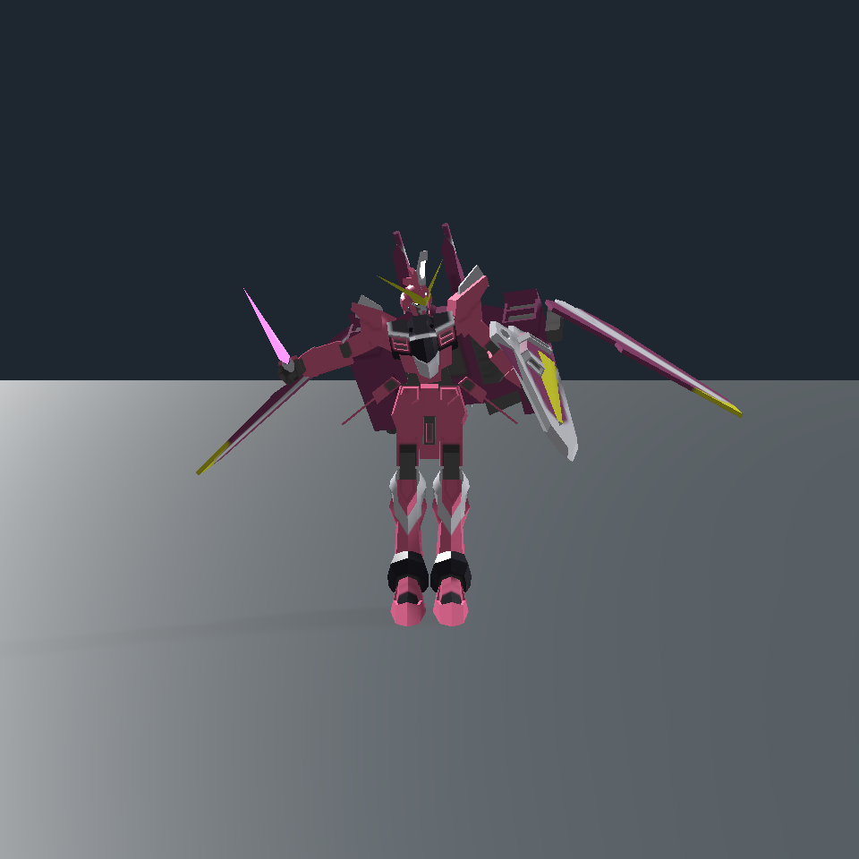
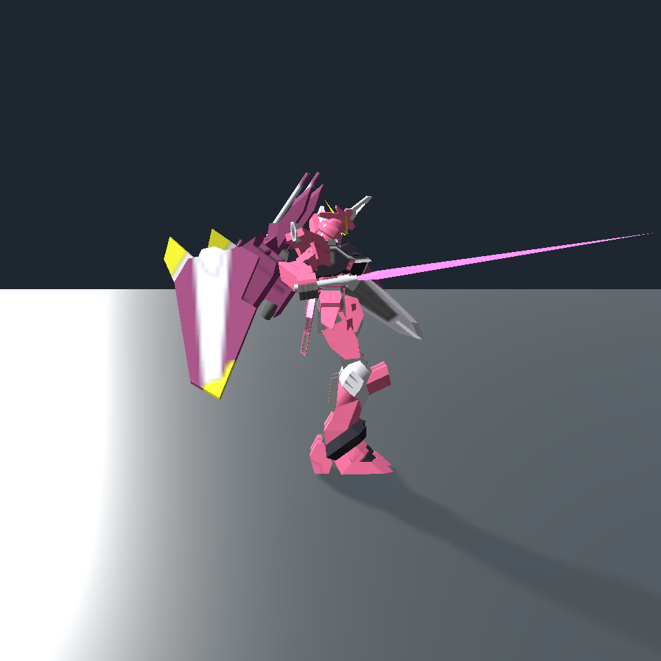
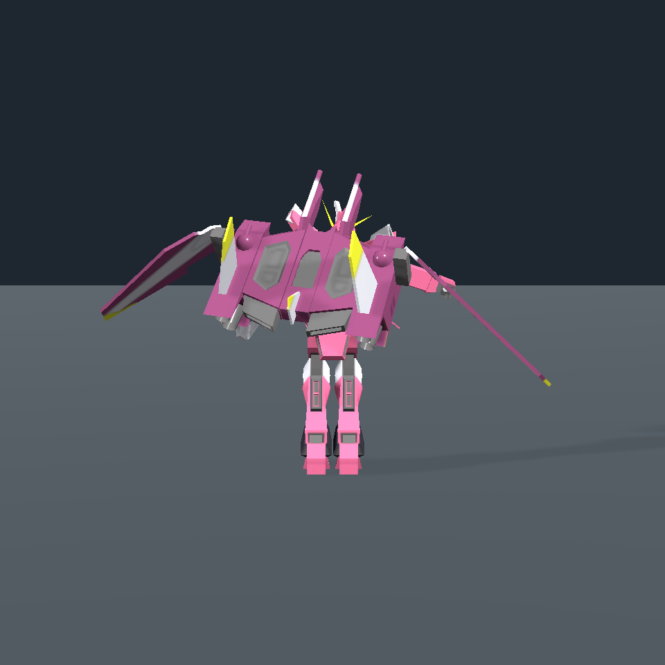
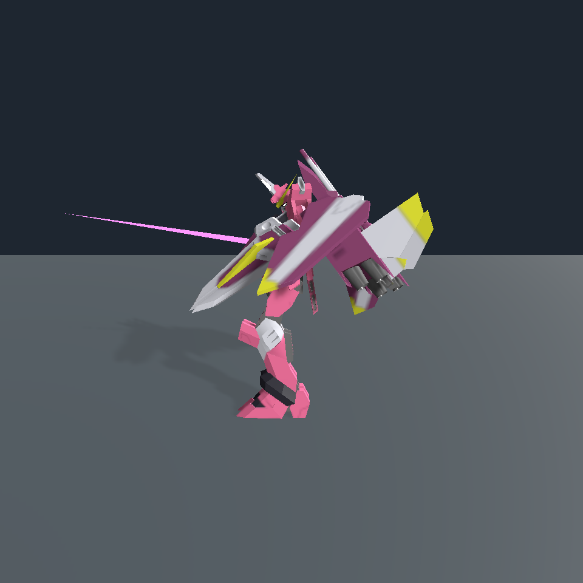
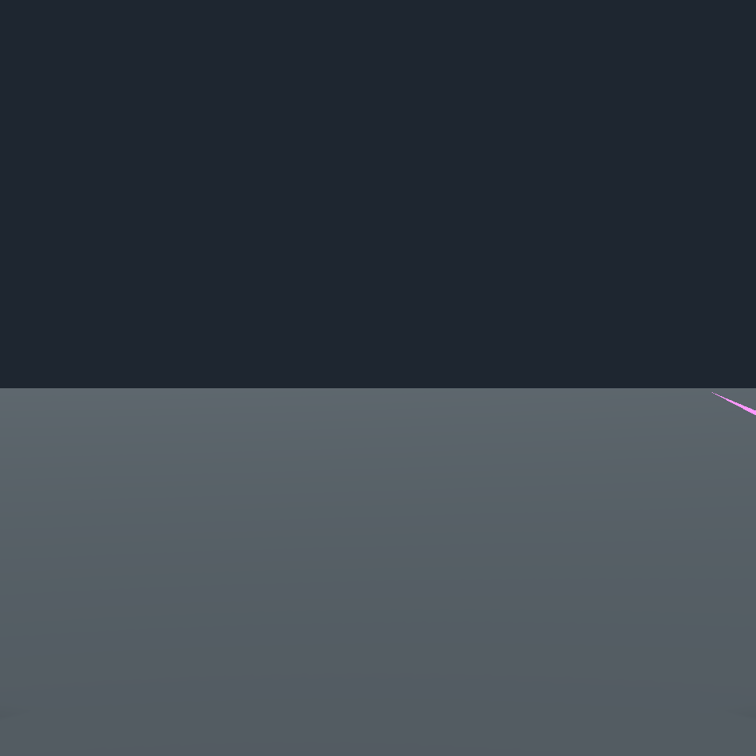
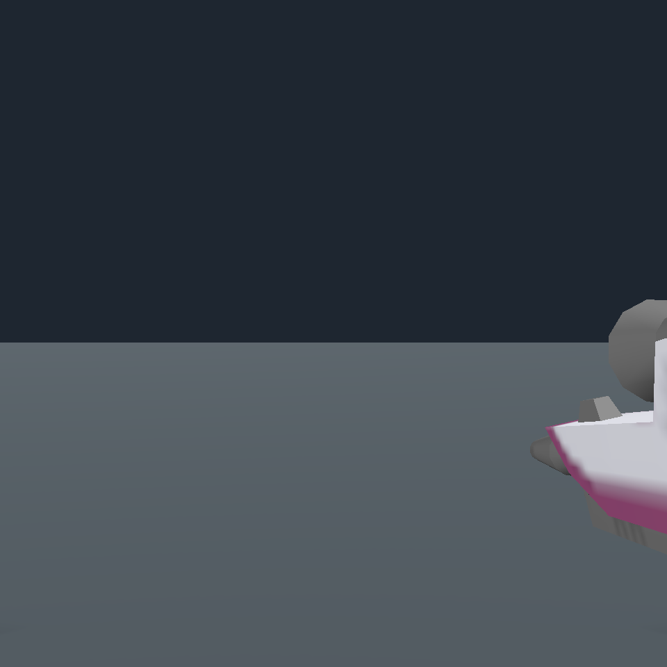
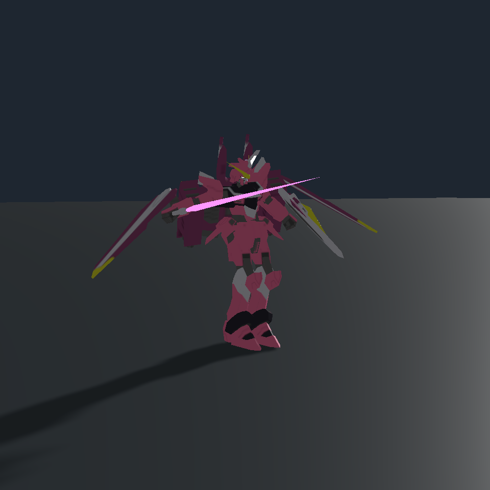

原贴图 · 65 关节 · 步行、滑行、Q 飞行与剑盾步枪
392 项原生检查 + 63 项基础检查通过。以下是隔离游戏引擎中的脚本驱动渲染。真人驾驶、旧存档重新加载、双机联机和实际帧率仍待验收。







战斗片段展示姿态，不含真实目标命中；上下机片段展示下蹲/起身，不代替完整入座交互。
模型：みそ太郎 / nama_140 · CC-BY-4.0。模型原始文件与署名保留在模组 Justice 资源目录中。